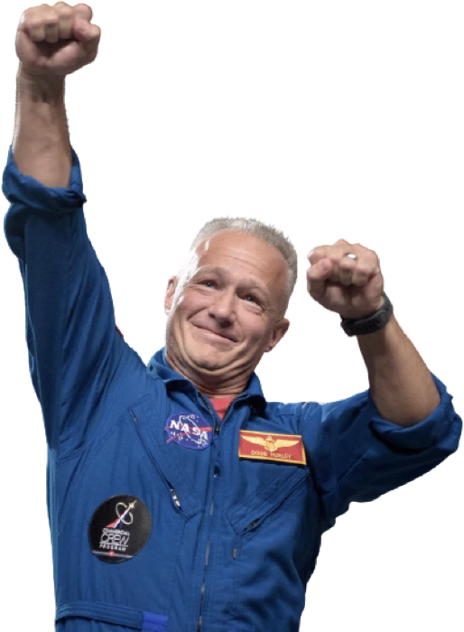

Douglas Gerald Hurley is an American engineer, former Marine
Corps pilot and former NASA astronaut. He launched into space
for the third time as commander of Crew Dragon Demo-2.

Mission Specialist
MARK SHUTTLEWORTH
Mark Richard Shuttleworth is the founder and CEO of Canonical,
the company behind the Linux-based Ubuntu operating system.
Shuttleworth became the first South African to travel to space
as a space tourist.
PILOT
Victor Glover
Pilot on the first operational flight of the SpaceX Crew
Dragon to the International Space Station. Glover is a
commander in the U.S. Navy where he pilots an F/A-18.He was a
crew member of Expedition 64, and served as a station systems
flight engineer.
Flight Engineer
Anousheh Ansari
Anousheh Ansari is an Iranian American engineer and co-founder
of Prodea Systems. Ansari was the fourth self-funded space
tourist, the first self-funded woman to fly to the ISS, and
the first Iranian in space.